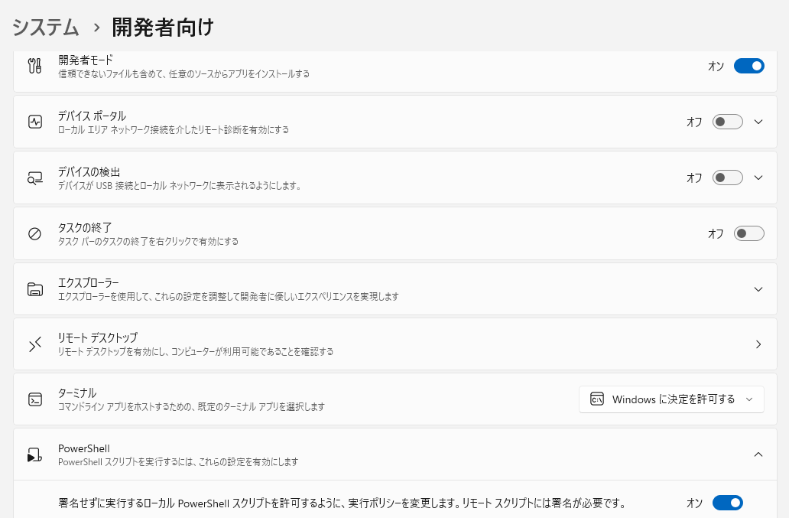
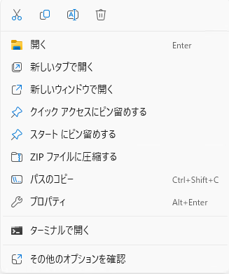
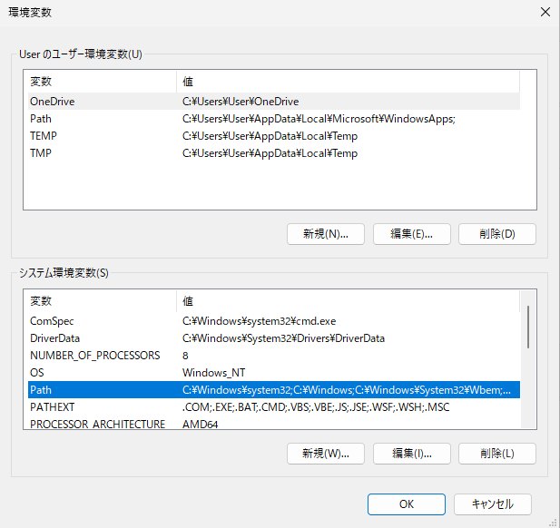
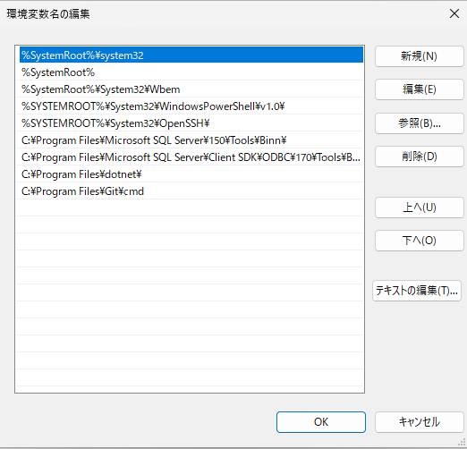
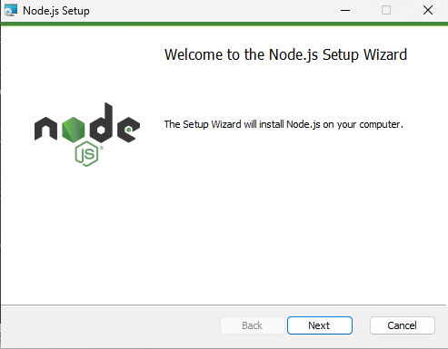

Appearance
環境構築
必要なものを用意する
紫紺祭投票アプリの設定を行うには、以下の要件を満たしたデバイス等が必要です。
- 64ビットバージョンの Windows 10 または Windows 11 を搭載したパソコン
ヒント
高校Ⅰ年次に購入する学習用ノートPCで正常に動作することを確認しています。 5GB 以上の空き容量が必要です。
- Google 認証システムがインストールされたスマートフォン
- Google 認証システム用の QR コードが記された紙
注意
引継ぎ時に渡されていない場合は、担当教員の先生に相談するか、このメールアドレスまで連絡をしてください。
必要な知識
Windows の基本・応用操作
このチュートリアルでは、Windows 11 を使用します。設定やエクスプローラーの開き方、エクスプローラー画面各部の名称をご存じない場合は、まず検索エンジンを使って最低限の操作方法を勉強されることをおすすめします。
本項で略して使う言葉
「スタート右クリック」：タスクバーにあるWindowsロゴ(青い田のロゴ)を右クリックしたメニューを開くこと。画像のようなメニューが表示されます。 
はじめに
文化祭準備委員会 総務部門ないしはそれに類する部門の部門長・副部門長を引き受けてくださり、ありがとうございます。 2025 年度文化祭準備委員会 総務部門長の小川です。 紫紺祭では 2025 年度より、教室展示等の各賞を決定する際に生徒・来校者双方へ行われる投票を円滑に運営するため、電子システムによる集計を開発・導入しました。このチュートリアルでは、本システムを各年度用に日程や投票先をカスタムする際に必要となる進め方・知識を解説しています。ぜひ、最後まで目を通していただき、円滑な投票運営へお役立てください。 また、本チュートリアルを読んだうえで質問等がある場合には、このメールアドレスまで連絡をしてください。
注意
紫紺祭関連であることがわからない場合、迷惑メールとして読み捨てる場合がありますのでご注意ください。
開発者モードの有効化
- Windows の設定を開き、左側のメニューから
システムを選択します。 - その中から、
開発者向けを選択します。 開発者モードを有効にします。- 下にスクロールし、
PowerShellの項目をクリックして展開、署名せずに実行するローカル PowerShell スクリプトを許可するように、実行ポリシーを変更します。リモートスクリプトには署名が必要です。を有効にします。

Git のインストール・設定
Git のインストール
- Git のダウンロードページにアクセスし、右側にある
Download for Windowsをクリックします。 - 次のページに飛ぶので、本文の一番上にある
Click here to downloadをクリックします。 Git-(バージョン名)-64-bit.exeがダウンロードされるので、それをダブルクリックして起動します。- このような画面が表示されたら、画面右下の
Nextを連打して、インストールを完了させてください。特に途中で設定を変更する必要はありません。

Git の初期設定
- タスクバーのWindowsロゴ(4つの窓が並んだアイコン)を右クリックし、
ターミナル(管理者)をクリックします。 - ターミナルのウィンドウが表示されるので、以下の2行を入力・コピペし、Enterを押して実行します。
bash
git config --global user.email Meiji.hs.vote@gmail.com
git config --global user.name ShikonFes_Sohmu以上で、Git の初期設定は完了です。(Gitからの出力はありません。)
Flutter SDKのインストール
- Flutter SDKのダウンロードページにアクセスし、 Install the Flutter SDK の見出しの項にある「 Download and install 」を押します。

- その下にある青いボタン「flutter_windows_(バージョン名)-stable.zip」を押し、 Zip ファイルをダウンロードします。
- ダウンロードした Zip ファイルを開き、中にある「
flutter」フォルダをC:\以下にコピーします。
ヒント
エクスプローラー上部の「ダウンロード > flutter_windows_3.35.4-stable」が書かれているところに、C:\と入力すると、C:\に飛ぶことができるので、そこに展開したFlutterフォルダを貼り付けるとよいです。
環境変数の設定
先ほどダウンロードし、C:\Flutter以下、または任意の場所へ展開したフォルダ内のbinフォルダを環境変数へ登録します。
- フォルダ構造の確認 先ほどコピーした
flutterフォルダからbinというフォルダを探し、右クリックメニューからパスをコピーを選択します。
- スタート右クリックから、
システムを選択し、表示された設定ウィンドウからシステムの詳細設定を探します。 - このようなウィンドウが表示されたら、右下の
環境変数(N)...をクリックします。
- このようなウィンドウが表示されるので、下の
システム環境変数のリストの中から、Pathという項目を探し、クリックして青く選択された状態にしたら、右下の編集(I)...をクリックします。
- このようなウィンドウが表示されたら、右側の
新規(N)をクリックし、先ほどコピーしたパスを貼り付けます。
注意
貼り付けた際に一緒についてくる""(ダブルクォーテーション)は必ず削除してください。
以下のような状態になればOKです。ここではやっていませんが、右側の上へ(U)を連打して、今追加したものが一番上になるように設定しておくと安定しやすいです。作業が完了したら、パソコンを再起動してください。 
確認
- スタート右クリックから、
ターミナル(管理者)をクリックします。 - ターミナルウィンドウが表示されるので、
flutterと入力します。 - 成功していたら、以下のような出力がされます。(あくまで例です。)
flutter : 用語 'flutter' は、コマンドレット、関数、スクリプト ファイル、または操作可能なプログラムの名前として認識されません。と表示される場合、どこかで間違っているのでよく見直してもう一度設定してみてください。
bash
Manage your Flutter app development.
Common commands:
flutter create <output directory>
Create a new Flutter project in the specified directory.
flutter run [options]
Run your Flutter application on an attached device or in an emulator.
Usage: flutter <command> [arguments]
Global options:
-h, --help Print this usage information.
-v, --verbose Noisy logging, including all shell commands executed.
If used with "--help", shows hidden options. If used with "flutter doctor", shows additional
diagnostic information. (Use "-vv" to force verbose logging in those cases.)
-d, --device-id Target device id or name (prefixes allowed).
--version Reports the version of this tool.
--enable-analytics Enable telemetry reporting each time a flutter or dart command runs.
--disable-analytics Disable telemetry reporting each time a flutter or dart command runs, until it is
re-enabled.
--suppress-analytics Suppress analytics reporting for the current CLI invocation.
Available commands:
Flutter SDK
bash-completion Output command line shell completion setup scripts.
channel List or switch Flutter channels.
config Configure Flutter settings.
doctor Show information about the installed tooling.
downgrade Downgrade Flutter to the last active version for the current channel.
precache Populate the Flutter tool's cache of binary artifacts.
upgrade Upgrade your copy of Flutter.
Project
analyze Analyze the project's Dart code.
assemble Assemble and build Flutter resources.
build Build an executable app or install bundle.
clean Delete the build/ and .dart_tool/ directories.
create Create a new Flutter project.
drive Builds and installs the app, and runs a Dart program that connects to the app, often to run
externally facing integration tests, such as with package:test and package:flutter_driver.
gen-l10n Generate localizations for the current project.
pub Commands for managing Flutter packages.
run Run your Flutter app on an attached device.
test Run Flutter unit tests for the current project.
Tools & Devices
attach Attach to a running app.
custom-devices List, reset, add and delete custom devices.
devices List all connected devices.
emulators List, launch and create emulators.
install Install a Flutter app on an attached device.
logs Show log output for running Flutter apps.
screenshot Take a screenshot from a connected device.
symbolize Symbolize a stack trace from an AOT-compiled Flutter app.
Run "flutter help <command>" for more information about a command.
Run "flutter help -v" for verbose help output, including less commonly used options.node.jsのインストール
- node.js のダウンロードページにアクセスし、下のほうの
x64 アーキテクチャーで動作する Windows 用のビルド済みの Node.js® も利用できます。と書いてあるところまでスクロールします。 - 左側の
Windows インストーラー(.msi)をクリックし、インストーラーをダウンロードします。
node-(バージョン名)-x64.msiがダウンロードされるので、それをダブルクリックして起動します。- このような画面が表示されたら、画面右下の
Nextを連打して、インストールを完了させてください。最初のLicence Agreement以外、特に設定を変更する必要はありません。